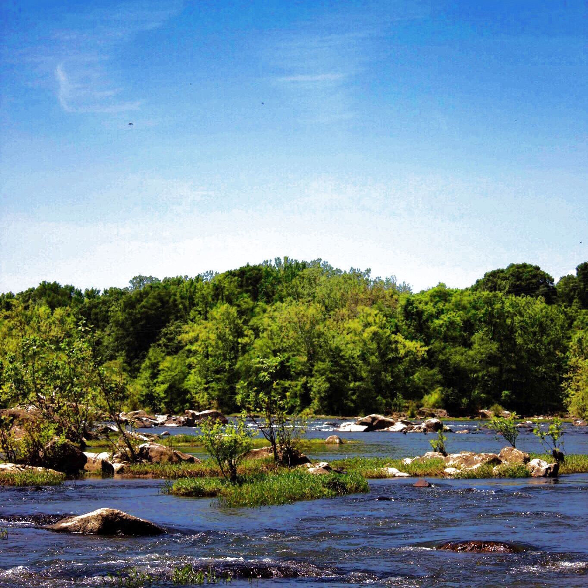

Historic Fredericksburg
Established in 1728, Fredericksburg is a city rich in history. Many of the people during that time had pivotal roles in the American Revolution and it's founding including George Washington, General Hugh Mercer, John Paul Jones and James Monroe. It's riverfront location, access to farm country and proximity to larger cities such as Richmond and Washington DC provide a great backdrop for the eclectic businesses that call Fredericksburg home.